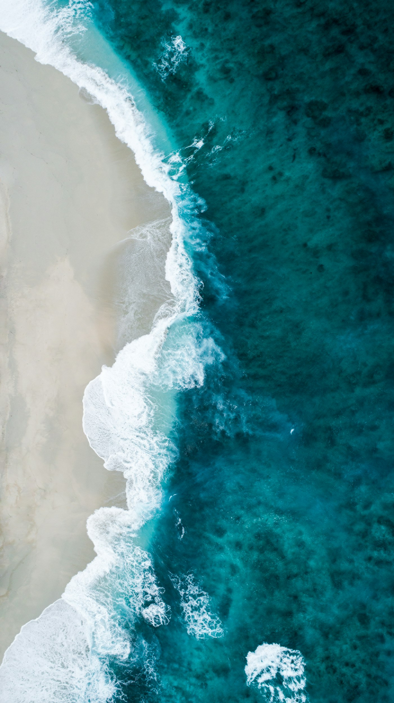
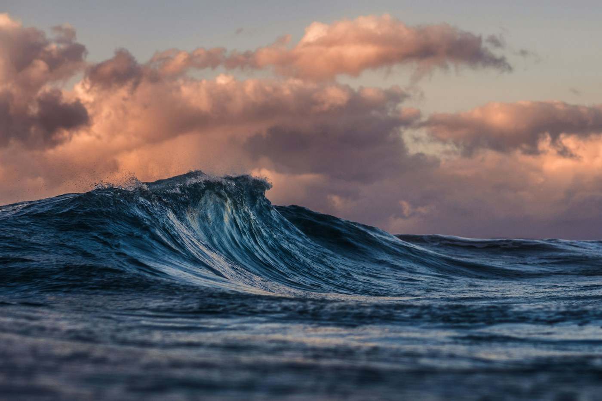

BLUE ATLAS / HANDS-ON LEARNING
Small experiments.
Big blue questions.
Explore how habitat, waves, and changing water levels connect. Adjust the model, record an observation, and see how your assumptions shape the result.
Start with the wave lab ↓01 / EXPERIMENT BOARD
Change one thing.
Notice what follows.
These browser-based activities are designed to make coastal science concepts easier to explore. They do not use live field data; your saved notes stay in this browser.
EXPERIMENT 01 / CONCEPTUAL MODEL
Can habitat influence wave energy?
Learning model, not a forecast. The simplified relationship is illustrative. Real-world effects depend on habitat condition, water depth, wave period, shoreline shape, and local measurements.
THINK ABOUT IT Which inputs changed the result most? What would you need to measure before applying this idea to a real coast?
FIELD CONTEXT / HABITATS ARE NOT INTERCHANGEABLE
Same ocean.
Different living edges.
Each habitat interacts with water in its own way. These images are prompts for observation, not sample sites or verified monitoring records.
Open the field guide ↗


EXPERIMENT 02 / PERSONAL FIELD NOTEBOOK
Record an observation.
Add a classroom or practice observation. Records are stored locally in this browser and are not uploaded.
| Date | Site | Habitat | Observation | Value | Context | Actions |
|---|---|---|---|---|---|---|
| Your notebook is empty. Add a practice observation to begin. | ||||||
LOCAL NOTEBOOK / Stored only in your browser’s local storage. Do not enter personal, sensitive, or confidential location information.